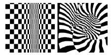
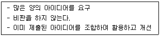
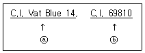

컬러리스트산업기사 (2020-06-06 기출문제)
1과목: 색채심리
1. 색채마케팅 전략에 직접적으로 영향을 미치는 환경요인으로 가장 거리가 먼 것은?
- 경제적 환경
- 기술적 환경
- 사회, 문화적 환경
- 정치적 환경
(정답률: 84%)

2. 일조량과 습도, 기후, 흙, 돌처럼 한 지역의 자연 환경적 요소로 형성된 색을 의미하는 것은?
- 등갈색
- 풍토색
- 문화색
- 선호색
(정답률: 96%)
3. 비슷한 구조의 부엌 디자인을 차별화시킬 수 있는 방법으로 틀린 것은?
- 새로운 색채 팔레트의 제안
- 소비자 선호색의 반영
- 다른 재료와 색채의 적용
- 일반적인 색채에 의한 계획
(정답률: 88%)
4. 표본의 크기에 대한 설명 중 틀린 것은?
- 표본의 오차는 표본을 뽑게 되는 모집단의 크기에 따라 크게 달라진다.
- 표본의 사례수(크기)는 오차와 관련되어 있다.
- 적정 표본 크기는 허용오차 범위에 의해 달라진다.
- 전문성이 부족한 연구자들은 선행 연구의 표본 크기를 고려하여 사례수를 결정한다.
(정답률: 44%)
5. 백화점 출구에서 20대를 대상으로 하는 새로운 화정품 개발을 위한 조사를 하려고 할 때 가장 적합한 표본집단 선정법은?
- 무작위추출법
- 다단추출법
- 국화추출법
- 계통추출법
(정답률: 63%)
6. 바닷가, 도시, 분지에 위치한 도시의 주거 공간의 외벽 색채계획 시 고려사항이 아닌 것은?
- 기후적, 지리적 환경
- 건설사의 기업 색채
- 건축물의 형태와 기능
- 주변 건물과 도로의 색
(정답률: 95%)
7. 색채의 심리적 기능 중 맞는 것은?
- 색채의 기능은 문자나 픽토그램 같은 표기 이상으로 직접 감각에 호소하기 때문에 효과가 빠르다.
- 색채는 인종과 언어, 시대를 초월하는 전달 수단은 아니다.
- 색채를 분류하거나 조사하고 기획하는 단계에서 무게감을 최우선으로 한다.
- 무게에 가장 큰 영향을 주는 색의 속성은 채도이다.
(정답률: 84%)
8. 색채와 연상언어의 연결이 틀린 것은?
- 빨강 – 위험, 사과, 에너지
- 검정 – 부정, 죽음, 연탄
- 노랑 – 인내, 겸손, 창조
- 흰색 – 결백, 백합, 소박
(정답률: 97%)
9. 동서양의 문화에 따른 색채 정보의 활용이 바르게 연결된 것은?
- 동양 문화권에서 신성시되는 종교색 – 노랑
- 중국의 왕권을 대표하는 색 – 빨강
- 봄과 생명의 탄색 – 파랑
- 평화, 진실, 협동 – 초록
(정답률: 57%)
10. 몬드리안(Mondrian)의 '부기우기'라는 작품에서 드러난 대표적인 색채 현상은?
- 착시
- 음성잔상
- 항상성
- 색채와 소리의 공감각
(정답률: 69%)
11. 대기 시간이 긴 공항 대합실의 기능적 면을 고려할 때 가장 적함한 색은?
- 파란색 계열
- 노란색 계열
- 주황 계열
- 빨간색 계열
(정답률: 93%)
12. 색채와 모양에 대한 공감각적 연구를 통해 색채와 모양의 조화로운 관계성을 추출한 사람은?
- 요하네스 이텐
- 뉴턴
- 카스텔
- 로버트 플러드
(정답률: 74%)
13. 한국의 전통적인 오방위와 색표시가 잘못된 것은?
- 동쪽 – 청색
- 남쪽 – 황색
- 북쪽 – 흑색
- 서쪽 – 백색
(정답률: 80%)
14. 색채연구가인 프랑스의 장 필립 랑크로(Jean-Philippe Lenclos)가 프랑스와 일본 등에서 조사 분석하여 국가 전체의 아이덴티티를 구축한 연구는?
- 지역색
- 공공의 색
- 유행색
- 패션색
(정답률: 70%)
15. 의미척도법(SD: semantic differential method)의 설명으로 틀린 것은?
- 미국의 색채 전문가 파버 비렌(Faber Birren)이 고안하였다.
- 반대의미를 갖는 형용사 쌍을 카테고리 척도에 의해 평가한다.
- 제품, 색, 음향, 감촉 등 다양한 대상의 인상을 파악하는 방법으로 많이 사용되고 있다.
- 의미공간을 효율적으로 정의하기 위해서는 그 공간을 대표하는 차원의 수를 최소로 결정할 필요가 있다.
(정답률: 42%)
16. 청색의 민주화 (Blue Civilization),는 어떤 의미인가?
- 서구문화권 국가의 성인 절반 이상의 청색을 매우 선호한다.
- 성인이 되면 색채 선호도가 변화한다.
- 성별 구분 없이 청색을 선호한다.
- 지역적인 색채선호도의 차이가 있다.
(정답률: 59%)
17. 인체의 챠크라(chakra) 영역으로 심장부를 나타내며 사랑을 의미하는 색은?
- 빨강
- 주황
- 초록
- 보라
(정답률: 43%)
18. 초록색의 일반적인 색채치료 효과로 가장 적합한 것은?
- 불면증에 효과가 있다.
- 혈압을 높인다.
- 근육 긴장을 증대한다.
- 무기력을 완화시킨다.
(정답률: 64%)
19. 색채조절을 통해 이루어지는 효과가 아닌 것은?
- 신체의 피로, 특히 눈의 피로를 막는다.
- 안전이 유지되며 사고가 줄어든다.
- 색채의 적용으로 주위가 산만해질 수 있다.
- 정리 정돈과 질서 있는 분위기가 연출된다.
(정답률: 91%)
20. 파버 비렌(Faber Birren)의 색과 연상 형태가 틀린 것은?
- 빨강 – 정사각형
- 노랑 – 역삼각형
- 초록 – 원
- 보라 – 타원
(정답률: 72%)
2과목: 색채디자인
21. 주거 공간의 색채계획 순서를 옭게 나열한 것은?
- 주거자 요구 및 시장성 파악 → 고객의 공감 획득 → 이미지 콘셉트 설정 → 색채 이미지 계획
- 고객의 공감 획득 → 주거자 요구 및 시장성 파악 → 이미지 콘셉트 설정 → 색채 이미지 계획
- 주거자 요구 및 시장성 파악 → 이미지 콘셉트 설정 → 색채 이미지 계획 → 고객의 공감 획득
- 이미지 콘셉트 설정 → 주거자 요구 및 시장성 파악 → 고객의 공감 획득 → 색채 이미지 계획
(정답률: 69%)
22. 환경색채디자인의 프로세스 중 대상물이 위치한 지역의 이미지를 예측 설정하는 단계는?
- 환경요인분석
- 색채이미지추출
- 색채계획목표설정
- 배색설정
(정답률: 29%)
23. 색채 계획 설계 단계에 해당 되는 것은?
- 콘셉트 이미지 작성
- 현장 적용색 검토, 승인
- 체크리스트 작성
- 대상의 형태, 재료 등 조건과 특성 파악
(정답률: 38%)
24. 게슈탈트(Gestalt) 형태심리 법칙으로 틀린 것은?
- 유사성
- 근접성
- 폐쇄성
- 독립성
(정답률: 68%)
25. 기능에 충실한 형태가 아름답다는 의미로 “형태는 기능을 따른다.” 라는 말을 한 사람은?
- 프랑크 로이드 라이트 (Frank Lloyd Wright)
- 루이스 설리번 (Louis Sullivan)
- 빅터 파파넥 (Victor Papanek)
- 윌리엄 모리스 (William Morris)
(정답률: 58%)
26. 원래는 그림을 그리기 위해 스케치한 컷을 의미했지만 오늘날에는 만화적인 그림에 유머나 아이디어를 넣어 완성한 그림을 지칭하는 것은?
- 카툰 (cartoon)
- 캐릭터 (character)
- 일러스트레이션 (illustration)
- 애니메이션 (animation)
(정답률: 79%)
27. 타이포그래피(Typography)를 가장 잘 설명한 것은?
- 일러스트 형태로 이루어진 글자의 조형적 표현
- 광고에 나오는 그림의 조형적 표현
- 글자에 의한 모든 커뮤니케이션의 조형적 표현
- 조합에 의한 커뮤니케이션의 조형적 표현
(정답률: 63%)
28. 그림과 가장 관련이 있는 현대디자인 사조는?

- 다다이즘
- 팝아트
- 옵아트
- 포스트모더니즘
(정답률: 82%)
29. 디자인의 원리 중 반복된 형태나 구조, 선의 연속과 단절에 의한 간격의 변화로 일어나는 시각적 운동을 말하는 것은?
- 조화
- 균형
- 율동
- 비례
(정답률: 72%)
30. 모던 디자인의 특징으로 옳은 것은?
- 유기적 곡선 형태를 추구한다.
- 영국의미술공예운동에 기초를 둔다.
- 사물의 형태는 그 역할과 기능에 따른다.
- 1880년부터 1차 세계대전까지의 디자인 사조이다.
(정답률: 63%)
31. 디자인 사조와 색채의 특징이 틀린 것은?
- 큐비즘의 대표적 작가인 파블로 피카소는 색상의 대비를 적극적으로 사용하였다.
- 플렉서스(Fluxus)에서는 회색조가 전반을 이루고 색이 있는 경우에는 어두운 색조가 주가 되었다.
- 팝아트는 부드러운 색조의 그러데이션(Gradetion) 특징이다.
- 다다이즘에서는 일반적으로어둡고 칙칙한 색조가 사용되었다.
(정답률: 83%)
32. 인류의 모든 가능성을 발휘하여 미래지향적인 새로운 개념의 자동차를 창조하려는 자세에서 나타난 디자인으로, 인류의 끝없는 꿈을 자동차 디자인을 통해 실현하고자 하는 디자인은?
- 반 디자인 (anti-design)
- 모던 디자인 (modern design)
- 애드밴스 디자인(advanced design)
- 바이오 디자인 (bio design)
(정답률: 67%)
33. 디자이너가 가져야 하는 중요한 자질이며 창조적이고 과거의 양식을 그대로 모방하지 않고 시대에 알맞은 디자인을 뜻하는 디자인 조건은?
- 경제성
- 심미성
- 독창성
- 합목적성
(정답률: 84%)
34. 디자인의 조건 중 경제성을 잘 나타낸 설명은?
- 저렴한 제품이 가장 좋은 제품이다.
- 최소의 비용으로 최대의 효과를 낼 수 있는 것이다.
- 많은 시간을 들여 공들인 제품이 경제성이 뛰어나다.
- 제품의 퀄리티(quality)가 높으면서 사용 목적에 맞아야 한다.
(정답률: 81%)
35. 일반적인 주거 공간 색채계획의 목적에 적절하지 않은 것은?
- 거실 인테리어 소품은 악센트 컬러를 사용해도 좋다.
- 천장, 벽, 마루 등은 심리적인 자극이 적은 색채를 계획한다.
- 전체적인 조화보다는 부분 부분의 색채를 계획하는 것이 중요하다.
- 식탁주변과 거실은 특수한 색채를 피하여 안정감을 주는 것이 좋다.
(정답률: 90%)
36. 디스플레이 디자인(Display Design)에 대한 설명 중 틀린 것은?
- 물건을 공간에 배치, 구성, 연출하여 사람의 시선을 유도하는 강력한 이미지 표현이다.
- 디스플레이의 구성 요소는 상품, 고객, 장소, 시간이다.
- P.O.P.(Point of Purchase)는 비상업적 디스플레이에 활용된다.
- 시각전달 수단으로서의 디스플레이는 사람, 물체, 환경을 상호 연결시킨다.
(정답률: 82%)
37. 디자인의 목적에 해당되지 않은 것은?
- 디자인은 보다 사용하기 쉽고, 편리하며, 아름다운 생활환경을 창조하는 조형행위이다.
- 디자인은 실용적이고 미적인 조형의 형태를 개발하는 것이다.
- 디자인은 아름다움을 추구하기 위하여 즉시적이고 무의식적인 조형의 방법을 개발하고 연구하는 것이다.
- 디자인은 특정 문제에 대한 목적을 마음에 두고, 이의 실천을 위하여 세우는 일련의 행위 개념이다.
(정답률: 79%)
38. 다음이 설명하는 아이디어 발상법은?

- 심벌(Symbol) 유추법
- 브레인스토밍
- 속성 열거법
- 고-스톱(Go-Stop)법
(정답률: 86%)
39. 생태학적 디자인 원리로 틀린 것은?
- 환경친화적인 디자인
- 리사이클린 디자인
- 에너지 절약형 디자인
- 생물학적 단일성을 강조하는 디자인
(정답률: 89%)
40. 렌더링에 의해 디자인을 검토한 후 상세한 디자인 도면을 그리고 그것에 따라 완성 제품과 똑같이 만드는 모형은?
- 목업(mock-up)
- 러프 스케치(rough sketch)
- 스탬핑(stamping)
- 엔지니어링(engineering)
(정답률: 83%)
3과목: 섹채관리
41. 물체색을 가장 정확하게 측정할 수 있는 장비는?
- 색차계(colorimeter)
- 분광광도계(spectrophotometer)
- 분광복사계(spectroradiometer)
- 표준광원(standard illuminant)
(정답률: 65%)
42. 모든 분야에서 물체색의 색채 삼속성을 가장 일반적으로 나타내는데 사용되는 표색계는?
- L*a*b* 표색계
- Hunter Lab 표색계
- (x, y) 색도계
- XYZ 표색계
(정답률: 68%)
43. CIE LABL 좌표로 L*=65, a*=30, b*=-20으로 측정된 색채에 대한 설명으로 틀린 것은?
- L* 값이 높은 편이므로 비교적 밝은 색이다.
- a* 값이 양(+)의 값을 갖고 있으므로 빨강이 많이 포함된 색이다.
- b* 값이 음(-)의 값을 갖고 있으므로 파랑이 많이 포함된 색이다.
- (a*,b*) 좌표가 원점과 가까우므로 채도가 높은 색이다.
(정답률: 70%)
44. 태양광 아래에서 가장 반사율이 높은 경우의 무명천은?
- 천연 무명천에 전혀 처리를 하지 않은 무명천
- 화학적 탈색처리 한 무명천
- 화학적 탈색처리 후 푸른색 염료로 약간 염색한 무명천
- 화학적 탈색처리 후 형광성 표백제로 처리한 무명천
(정답률: 65%)
45. 자외선에 의해 황변현상이 가장 심한 섬유소재는?
- 면
- 마
- 레이온
- 견
(정답률: 49%)
46. 다음 중 컬러 인덱스(Color Index)에 대한 설명으로 옳은 것은?
- 안료 회사에서 원산지를 표기한 데이터베이스
- 화학구조에 따라 염료와 안료로 구분하고 응용방법, 견뢰도(fastness)데이터, 제조업체명, 제품명을 기록한 데이터베이스
- 안료를 판매할 가격에 따라 분류한 데이터베이스
- 안료를 생산한 국적에 따라 분류한 데이터베이스
(정답률: 81%)
47. 육안검색에 의한 색채판별조건에 대한 설명으로 옳은 것은?
- 관찰자와 대상물의 각도는 30°로 한다.
- 비교하는 색은 인접하여 배열하고 동일평면으로 배열되도록 배치한다.
- 관측조도는 300Lux이상으로 한다.
- 대상물의 색상과 비슷한 색상을 바탕면색으로 하여 관측한다.
(정답률: 75%)
48. 사진, 그림 등의 이미지나 인쇄물 등에서 밝은 부분과 어두운 부분의 중간 계조 회색부분으로 적당한 크기와 농도의 작은 점들로 명암의 미묘한 변화가 만들어지는 표현방법은?
- 영상 처리(image processing)
- 컬러 매칭(color matching)
- 캘리브레이션(calibration)
- 하프톤(halftone)
(정답률: 56%)
49. HSB 디지털 색채 시스템에 관한 설명으로 틀린 것은?
- H 모드는 색상으로 0°에서 360°까지의 각도로 이루어져 있다.
- B 모드는 밝기로 0%에서 100%로 구성되어 있다.
- S 모드는 채도로 0°에서 360°까지의 각도로 이루어져 있다.
- B 값이 100%일 경우 반드시 흰색이 아니라 고순도의 원색일 수도 있다.
(정답률: 58%)
50. 최초의 합성염료로서 아닐린 설페이트를 산화시켜서 얻어 내며 보라색 염료로 쓰이는 것은?
- 산화철
- 모베인(모브)
- 산화망간
- 옥소크롬
(정답률: 68%)
51. 조명방식 중 광원의 90% 이상을 천장이나 벽에 부딪혀 확산된 반사광으로 비추는 방식으로 눈부심이 없고 조도분포가 균일한 형태의 조명 형태는?
- 직접 조명
- 간접 조명
- 반직접 조명
- 반간접 조명
(정답률: 77%)
52. 아래의 컬러 인텍스 구조에 대한 설명으로 옳은 것은?

- ⓐ : 색료 사용 용도에 따른 분류, ⓑ : 화학적인 구조가 주어지는 물질 번호
- ⓐ : 색료 사용 용도에 따른 분류, ⓑ : 제조사 등록 번호
- ⓐ : 색역에 따른 분류, ⓑ : 판매업체 분류 번호
- ⓐ : 착색의 견뢰성에 따른 분류, ⓑ : 광원에서의 색채 현시 분류 번호
(정답률: 47%)
53. 디지털 컴퓨터 시스템에 의한 색채의 혼합 중 가법혼색에 의한 채널의 값(R, G, B)이 옳은 것은?
- 시안(255, 255, 0)
- 마젠타(255, 0, 255)
- 노랑(0, 255, 255)
- 초록(0, 0, 255)
(정답률: 75%)
54. 연색지수에 대한 설명으로 틀린 것은?
- 연색지수는 기준광과 시험광원을 비교하여 색온도를 재현하는 정도를 나타내는 지수이다.
- 연색지수는 인공광원이 얼마나 기준광과 비슷하게 물체의 색을 보여주는가를 나타낸다.
- 연색지수 100에 가까울수록 연색성이 좋으며 자연광에 가깝다.
- 연색지수를 산출하는데 기준이 되는 광원은 시험광원에 따라 다르다.
(정답률: 29%)
55. PNG 파일 포맷에 대한 설명으로 옳은 것은?
- 압축률이 떨어지지만 전송속도가 빠르고 이미지의 손상이 적으면 간단한 애니메이션 효과를 낼 수 있다.
- 알파채널, 트루컬러 지원, 비손실 압축을 사용하여 이미지 변형 없이 웹상에 그대로 표현이 가능하다.
- 매킨토시의 표준파일 포맷방식으로 비트맵, 벡터 이미지를 동시에 다룰 수 있다.
- 1600만 색상을 표시할 수 있고 손실압축방식으로 파일의 크기가 작기 때문에 웹에서 널리 사용된다.
(정답률: 56%)
56. 디지털 카메라, 스캐너와 같은 입력장치가 사용하는 기본색은?
- 빨강(R), 파랑(B), 옐로우(Y)
- 마젠타(M), 옐로우(Y), 녹색(G)
- 빨강(R), 녹색(G), 파랑(B)
- 마젠타(M), 옐로우(Y), 시안(C)
(정답률: 73%)
57. 매우 미량의 색료만 첨가되어도 색소효과가 뛰어나야 하며, 특히 유독성이 없어야 하는 색소는?
- 형광 색소
- 금속 색소
- 섬유 색소
- 식용 색소
(정답률: 77%)
58. 색채측정기의 종류를 크게 두 가지로 나눈다면 어떤 것이 있는가?
- 필터식 색채계와 망점식 색채계
- 분광식 색체계와 렌즈식 색채계
- 필터식 색채계와 분광식 색채계
- 음이온 색채계와 분사식 색채계
(정답률: 81%)
59. 흑체에 대한 설명으로 틀린 것은?
- 흑체란 외부의 에너지를 모두 반사하는 이론적인 물질이다.
- 반사가 전혀 일어나지 않으므로 이를 상징하여 흑체라고 한다.
- 흑체가 에너지를 흡수하면 물체는 뜨거워진다.
- 흑체는 비교적 저온에서는 붉은 색을 띤다.
(정답률: 60%)
60. 백색도에 대한 설명으로 틀린 것은?
- 백색도는 물체의 흰 정도를 나타낸다.
- 완전한 반사체의 경우 그 값이 100이다.
- 밝기를 측정하기 위한 수치이다.
- 표준광 D65에서의 표면색에 의해 정의되고 있다.
(정답률: 42%)
4과목: 색채지각의이해
61. 푸르킨예 현상을 바르게 설명한 것은?
- 직물을 색조 디자인할 때 직조 시 하나의 색만을 변화시키거나 더함으로써 전체 색조를 조절할 수 있는 것
- 하얀 바탕종이에 빨간색 원을 놓고 얼마간 보다가 하얀 바탕종이를 빨간 종이로 바꾸어 놓았을 때 빨간색이 검정색으로 보이는 현상
- 색상환의 기본색인 빨강, 노랑, 녹색, 파랑 등의 색이 조합되었을 때 그 대비가 뚜렷이 나타나는 것
- 암순응 되기 전에는 빨간색 꽃이 잘 보이다가 암순응이 되면 파란색 꽃이 더 잘 보이게 되는 것으로 광자극에 따라 활동하는 시각기제가 바뀌는 것
(정답률: 74%)
62. 잔상에 대한 설명으로 틀린 것은?
- 잔상이 원래의 감각과 같은 질의 밝기나 색상을 가질 때, 이를 양성 잔상이라 한다.
- 잔상이 원래의 감각과 반대의 밝기 또는 색상을 가질 때,이를 음성 잔상이라 한다.
- 물체색에 있어서의 잔상은 거의 원래색상과 보색관계에 있는 보색잔상으로 나타난다.
- 음성 잔상은 동화 현상과 관련이 있다.
(정답률: 68%)
63. 카메라의 렌즈에 해당하는 것으로 빛을 망막에 정확하게 깨끗하게 초점을 맺도록 자동적으로 조절하는 역할을 하는 것은?
- 모양체
- 홍채
- 수정체
- 각막
(정답률: 56%)
64. 물리적 혼합이 아닌 눈의 망막에서 일어나는 착시적 혼합은?
- 가산혼합
- 감산혼합
- 중간혼합
- 디지털혼합
(정답률: 58%)
65. 컬러 프린트에 사용되는 잉크 중 감법혼색의 원색이 아닌 것은?
- 검정
- 마젠타
- 시안
- 노랑
(정답률: 82%)
66. 선물을 포장하려 할 때, 부피가 크게 보이려면 어떤 색의 포장지가 가장 적합한가?
- 고채도의 보라색
- 고명도의 청록색
- 고채도의 노란색
- 저채도의 빨간색
(정답률: 80%)
67. 장파장 계열의 빛을 방출하여 레스토랑 인테리어에 활용하기 적당한 광원은?
- 백열등
- 나트륨 램프
- 형광등
- 태양광선
(정답률: 61%)
68. 빛의 이론에 대한 설명으로 옳은 것은?
- 전자기파설 – 빛의 파동을 전하는 매질로서 에테르의 물질을 가상적으로 생각하는 학설이다.
- 파동설 – 영국의 물리학자 맥스웰이 제창한 학설이다.
- 입자설 – 빛은 원자차원에서 광자라는 입자의 성격을 가진 에너지의 알맹이이다.
- 광양자설 - 빛의 연속적으로 파동하고, 공간에 퍼지는 것이 아니라 광전자로서 불연속적으로 진행한다.
(정답률: 37%)
69. 비눗방울 등의 표면에 있는 색으로, 보는 각도에 따라 다르게 보이는 것은 빛의 어떤 원리를 이용한 것인가?
- 간섭
- 반사
- 굴절
- 흡수
(정답률: 46%)
70. 어떤 두 색이 서로 가까이 있을 때 그 경계의 부분에서 강한 색채대비가 일어나는 현상은?
- 계시대비
- 보색대비
- 착시대비
- 연변대비
(정답률: 63%)
71. 망막상에서 상의 초점이 맺히는 부분은?
- 중심와
- 맹점
- 시신경
- 광수용기
(정답률: 53%)
72. 빛이 밝아지면 명도대비가 더욱 강하게 느껴지는 시지각적 효과는?
- 애브니(Abney) 효과
- 베너리(Benery) 효과
- 스티븐스(Stevens) 효과
- 리프만(Liebmann) 효과
(정답률: 30%)
73. 색의 속성 중 색의 온도감을 좌우하는 것은?
- Value
- Hue
- Chroma
- Saturation
(정답률: 61%)
74. 둘러싸고 있는 색이 주위의 색에 닮아 보이는 것은?
- 색지각
- 매스효과
- 색각항상
- 동화효과
(정답률: 85%)
75. 심리적으로 가장 큰 흥분감을 유도하는 색에 대한 설명으로 옳은 것은?
- 단파장의 영역에 속한다.
- 자외선의 영역에 속한다.
- 장파장의 영역에 속한다.
- 적외선의 영역에 속한다.
(정답률: 73%)
76. 색료혼합의 보색관계에 대한 설명으로 옳은 것은?
- 혼합하였을 때, 유채색이 되는 두 색
- 혼합하였을 때, 무채색이 되는 두 색
- 혼합하였을 때, 청(淸)색이 되는 두 색
- 혼합하였을 때, 명(明)색이 되는 두 색
(정답률: 85%)
77. 보색관계인 두 색을 인접시켰을 때 서로의 영향으로 본래의 색보다 강조되며 상승효과를 가져오는 특성은?
- 명도
- 채도
- 조도
- 미도
(정답률: 72%)
78. 면색(film color)을 설명하고 있는 것은?
- 순수하게 색만 있는 느낌을 주는 색
- 어느 정도의 용적을 차지하는 투명체의 색
- 흡수한 빛을 모아 두었다가 천천히 가시광선 영역으로 나타나는 색
- 나비의 날개, 금속의 마찰면에서 보여지는 색
(정답률: 68%)
79. 색상대비에 대한 설명이 옳은 것은?
- 빨강 위의 주황색은 노란색에 가까워 보인다.
- 색상대비가 일어나면 배경색의 유사색으로 보인다.
- 어두운 부분의 경계는 더 어둡게, 밝은 부분의 경계는 더 밝게 보인다.
- 검정색 위의 노랑은 명도가 더 높아 보인다.
(정답률: 35%)
80. 견본을 보고 벽 도색을 위한 색채를 선정할 때, 고려해야 할 대비현상과 결과는?
- 면적 대비 효과 – 면적이 커지면 명도와 채도가 견본 보다 낮아진다.
- 면적 대비 효과 – 면적이 커지면 명도와 채도가 견본 보다 높아진다.
- 채도 대비 효과 – 면적이 커져도 견본과 동일하다.
- 면적 대비 효과 – 면적이 커져도 견본과 동일하다.
(정답률: 68%)
5과목: 색채체계의이해
81. 색의 속성을 표현하기 위한 다양한 용어들 중에서 '명암'과 관계된 용어로 옳은 것은?
- hue, value, chroma
- value, neutral, gray scale
- hue, value, gray scale
- value, neutral, chroma
(정답률: 67%)
82. NCS 색체계의 표기방법인 S4030-B20G에 대한 설명으로 옳은 것은?
- 40%의 하양색도
- 30%의 검정색도
- 20%의 초록을 함유한 파란색
- 20%의 파랑을 함유한 초록색
(정답률: 62%)
83. 색이름에 대한 설명으로 틀린 것은?
- 생활환경과 색명의 발달은 밀접한 관계가 있다.
- 같은 색이라도 문화에 따라 다른 색명으로 부르기도 한다.
- 문화의 발달정도와 색명의 발달은 비례한다.
- 일정한 규칙을 정해 색을 표현하는 것은 관용색명이다.
(정답률: 58%)
84. 한국의 전통색명에 대한 설명으로 옳은 것은?
- 지황색(芝黃色) : 종이의 백색
- 휴색(烋色) : 옻으로 물들인 색
- 감색(紺色) : 아주연한 붉은 색
- 치색(緇色) : 비둘기의 깃털 색
(정답률: 44%)
85. 먼셀 색체계의 색상에 관한 설명으로 틀린 것은?
- R, Y, G, B, P의 기본색을 등간격으로 배치한 후 중간색을 넣어 10개의 색상을 만들었다.
- 10색상의 사이를 각각 10등분하여 100색상을 만들었다.
- 각 색상은 1에서 10까지의 숫자를 붙였다.
- 색상의 기본색은 10이 된다.
(정답률: 50%)
86. 한국산업표준 KS A 0011의 유채색의 수식형용사와 대응 영어의 연결이 잘못된 것은?
- 선명한 – vivid
- 진한 – deep
- 탁한 – dull
- 연한 – light
(정답률: 67%)
87. 먼셀 색체계는 H V/C로 표시한다. 다음 중 V에 대한 설명으로 옳은 것은?
- CIE L*u*v*에서 L*로 표현될 수 있다.
- CIE L*c*h*에서 c*로 표현될 수 있다.
- CIE L*a*b*에서 a*b*로 표현될 수 있다.
- CIE Yxy에서 y로 표시될 수 있다.
(정답률: 59%)
88. 회전 혼색 원판에 의한 혼색을 표현하며 모든 색을 B+W+C=100 이라는 혼합비를 통해 체계화한 색체계는?
- 먼셀 색체계
- 비렌 색체계
- 오스트발트 색체계
- PCCS 색체계
(정답률: 67%)
89. L*c*h* 색공간에서 색상각 90°에 해당 하는 색은?
- 빨강
- 노랑
- 초록
- 파랑
(정답률: 64%)
90. 혼색계에 대한 설명으로 틀린 것은?
- 환경을 임의로 설정하여 정확한 측정을 할 수 있다.
- 수치로 표기되어 변색, 탈색 등 물리적 영향이 없다.
- CIE의 L*a*b*, CIE의 L*u*v*, CIE의 XYZ, Hunter Lab 등의 체계가 있다.
- 측색기 등의 측정기계를 필요로 하지 않는다.
(정답률: 62%)
91. 색채가 가지고 있는 이미지가 전달하려는 심리를 바탕으로 감성을 구분하는 기준이며, 단색 혹은 배색의 심리적 감성을 언어로 분류한 것은?
- 이미지 스케일
- 이미지 매핑
- 칼라 팔레트
- 세그먼트 맵
(정답률: 53%)
92. 색에 대한 의사소통이 간편하도록 계통색이름을 표준화한 색체계는?
- Munsell System
- NCS
- ISCC-NIST
- CIE XYZ
(정답률: 50%)
93. 문-스펜서의 색채 조화론에서 조화의 배색이 아닌 것은?
- 동일조화
- 다색조화
- 유사조화
- 대비조화
(정답률: 78%)
94. 집중력을 요구하며, 밝고 쾌적한 연구실 공간을 위한 주조 색으로 가장 적합한 색은?
- 2.5YR 5/2
- 5B 8/1
- N5
- 7.5G 4/8
(정답률: 47%)
95. 다음 중 DIN 색체계의 표기방법은?
- S3010 – R90B
- 13 : 5 : 3
- 10ie
- 16 : gB
(정답률: 50%)
96. PCCS 색체계의 기본 색상 수는?
- 8색
- 12색
- 24색
- 36색
(정답률: 72%)
97. 오스트발트 색체계의 색상환에서 기본색이 아닌 것은?
- Yellow
- Ultramarine Blue
- Green
- Purple
(정답률: 30%)
98. ISCC-NIST 색명법에 있으나 KS 계통색명에 없는 수식형용사는?
- vivid
- pale
- deep
- brilliant
(정답률: 76%)
99. 밝은 베이지 블라우스와 어두운 브라운 바지를 입은 경우는 어떤 배색이라고 볼 수 있는가?
- 반대 색상 배색
- 톤 온 톤 배색
- 톤 인 톤 배색
- 세퍼레이션 배색
(정답률: 75%)
100. 일본 색채연구소가 1964년에 색채교육을 목적으로 개발한 색체계는?
- PCCS 색체계
- 먼셀 색체계
- CIE 색체계
- NCS 색체계
(정답률: 79%)